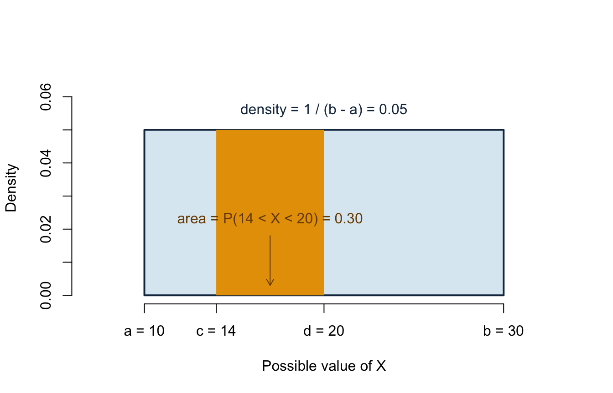
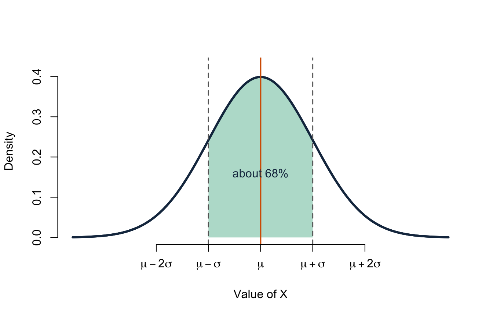
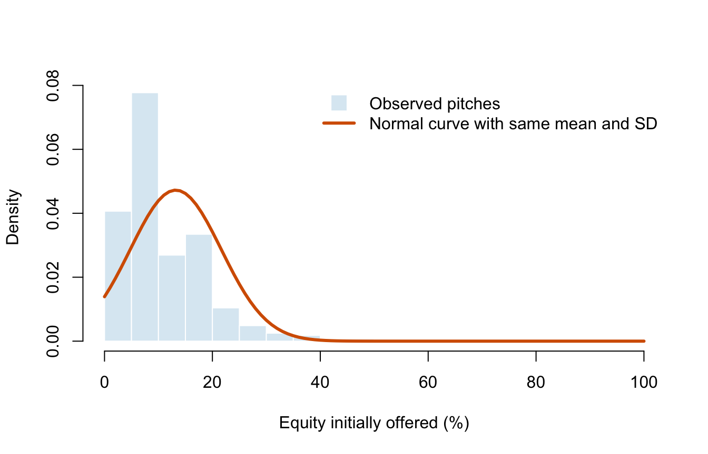

Lecture 6: Continuous distributions and the normal model
- distinguish a continuous random variable from a discrete one;
- interpret a probability density function as area rather than point probability;
- use a CDF to calculate interval probabilities;
- recognise uniform and normal models;
- standardise a normal random variable and calculate probabilities in R.
Before class
Video preparation
Watch Probability
Density Functions, Uniform
Random Variables, and Normal
Random Variables. Focus on the difference between density height and
probability, and on the roles of the two normal parameters.
If powers, square roots, inequalities, or functions feel unfamiliar, review Mathematics Refresher: powers, functions, and intervals.
A discrete random variable has separated possible values. A continuous random variable can take every real value in an interval. Match each variable to the better description:
- number of sharks in an on-air deal;
- exact time spent negotiating a pitch;
- season number;
- exact amount invested, before rounding to dollars.
Check your preparation
Variables 1 and 3 are discrete. Variables 2 and 4 are continuous in a mathematical model, even if a measuring device or database records rounded values.
In class
MIT explanations (review): 08.2 Probability Density Functions, 05.5 Uniform Random Variables, and 08.8 Normal Random Variables.
From probability mass to probability density
For a discrete random variable, a PMF assigns probability to individual values. For a continuous random variable \(X\), every individual point has probability zero:
\[ P(X=x)=0. \]
Probabilities belong to intervals. A probability density function (PDF), written \(f_X(x)\), is a non-negative curve whose total area is 1. The probability that \(X\) lies between \(a\) and \(b\) is the area under the curve between those values.
For completeness, that area is written
\[ P(a<X\le b)=\int_a^b f_X(x)\,dx. \]
You will not be asked to evaluate integrals in this course. You do need to interpret areas and use R or supplied tables to calculate them.
Density is not probability. A density can exceed 1 as long as the total area under the curve is 1.
The CDF works for every random variable
The cumulative distribution function is still
\[ F_X(x)=P(X\le x). \]
For a continuous random variable,
\[ P(a<X\le b)=F_X(b)-F_X(a). \]
Because a single point has zero probability, changing \(<\) to \(\le\) does not change a continuous probability. This differs from a discrete variable, where a point may carry positive probability.
The uniform distribution
If every equal-length subinterval of \([a,b]\) is equally likely, then \(X\sim U(a,b)\). Its density is constant:
\[ f_X(x)=\frac{1}{b-a},\qquad a\le x\le b. \]
The support is the interval \([a,b]\). Outside it, the density is zero. The constant height \(1/(b-a)\) is forced by the requirement that the whole rectangle have area 1:
\[ \text{width}\times\text{height} =(b-a)\frac{1}{b-a}=1. \]
Because the height is constant, interval probability depends only on interval length. An interval twice as long has twice the probability.
For \(a\le c<d\le b\),
\[ P(c<X<d)=\frac{d-c}{b-a}. \]

Read the horizontal axis as possible values of \(X\) and the vertical axis as density, not probability. The navy density line is at 0 before \(a=10\), jumps to 0.05 on the support, and drops back to 0 after \(b=30\). The orange probability is an area, not the height of the rectangle: \(6\times0.05=0.30\). The numerical size of a density depends on the units. Changing minutes to seconds changes the density height but not the probability of the same time interval.
The mean and variance are
\[ E[X]=\frac{a+b}{2}, \qquad \operatorname{Var}(X)=\frac{(b-a)^2}{12}. \]
Example. If an anonymised pitch order is modelled as uniformly distributed over a 90-minute session, the probability of appearing during a particular 18-minute interval is \(18/90=0.20\).
The normal distribution
A normal random variable is written
\[ X\sim N(\mu,\sigma^2). \]
The density is symmetric and bell-shaped. The parameter \(\mu\) locates its centre; \(\sigma>0\) controls its spread. Consequently,
\[ E[X]=\mu, \qquad \operatorname{Var}(X)=\sigma^2. \]

The horizontal axis locates possible values relative to \(\mu\) and \(\sigma\); the vertical axis is density. Probability is again represented by area. The shaded central area lies between \(\mu-\sigma\) and \(\mu+\sigma\) and contains about 68% of a normal distribution. Approximately 95% lies within 1.96 standard deviations. These percentages describe the mathematical normal model; they are not automatic facts about every dataset.
The normal distribution is a model, not a label for every quantitative variable. Skewness, extreme outliers, bounds, or multiple peaks can make it a poor description. The next graph checks the model against the observed distribution of initial equity offers. The bars show the data; the orange curve is the normal density with the same sample mean and standard deviation.

The horizontal axis records initial equity in percentage points. The vertical axis is density, so bar areas, rather than heights alone, represent proportions of pitches. The observed distribution is strongly right-skewed, has repeated common percentage values, and is bounded between 0% and 100%. The symmetric orange curve misses these important features, so a normal model is not convincing for individual offers. Later, the normal model will often describe a sampling distribution even when the original variable is not normal.
Standardising normal values
If \(X\sim N(\mu,\sigma^2)\), then
\[ Z=\frac{X-\mu}{\sigma}\sim N(0,1). \]
A z-score reports how many standard deviations a value lies above or below
the mean. In R, pnorm() calculates cumulative probabilities and qnorm()
returns quantiles.
## [1] 0.9772499## [1] -1.959964 1.959964For \(X\sim N(50,10^2)\), the value 70 has z-score \((70-50)/10=2\). About 97.7% of the distribution lies at or below it.
After class
Retrieval
- Why is \(P(X=x)=0\) for a continuous random variable?
- What quantity under a PDF represents probability?
- How do you obtain \(P(a<X\le b)\) from a CDF?
- What do \(\mu\) and \(\sigma\) control in a normal model?
- What does a z-score of \(-1.5\) mean?
Check your answers
- Probability is assigned to intervals; an individual point has zero width and therefore zero area.
- Area under the density curve.
- \(F_X(b)-F_X(a)\).
- \(\mu\) controls the centre and \(\sigma\) the spread.
- The value is 1.5 standard deviations below the mean.
Practice
- Let \(X\sim U(10,30)\). Find \(P(14<X<20)\), \(E[X]\), and \(\operatorname{SD}(X)\).
- Let \(Y\sim N(100,15^2)\). Calculate \(P(Y\le115)\) and \(P(85<Y<115)\) in R.
- Find the 90th percentile of \(N(100,15^2)\).
- Explain why the normal curve in the graph is not a convincing model for offered equity.
- A uniform variable is recorded in minutes and then converted to seconds. Explain what changes about the PDF and what remains unchanged.
Check your answers
- \(P(14<X<20)=6/20=0.30\), \(E[X]=20\), and \(\operatorname{SD}(X)=20/\sqrt{12}\approx5.77\).
pnorm(115, 100, 15)gives about 0.841; subtractingpnorm(85, 100, 15)from it gives about 0.683.qnorm(0.90, 100, 15)gives about 119.2.- The empirical distribution is bounded, right-skewed, and concentrated at a few common percentages; the fitted normal curve does not reproduce those features.
- The numerical support and density height change with the units. Probabilities for corresponding time intervals remain unchanged because they are areas.
Continue to Lecture 7: Samples, parameters, and estimators.
Formula sheet: Lecture 6 formulas.
For a more formal explanation, consult Nieuwenhuis, Statistical Methods for Business and Economics, Chapter 10.